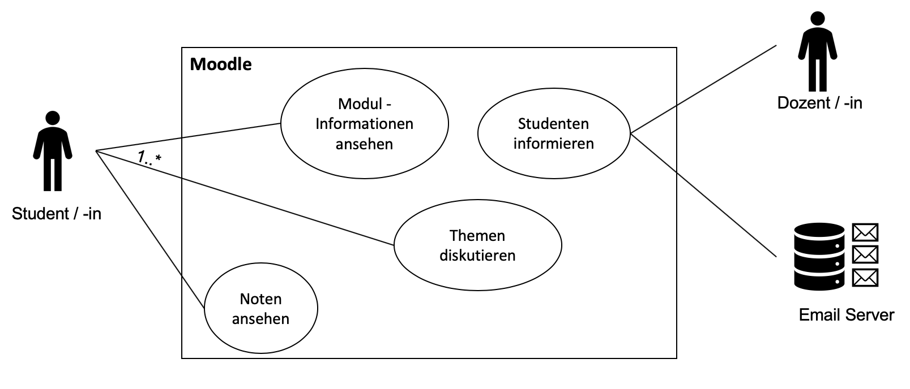
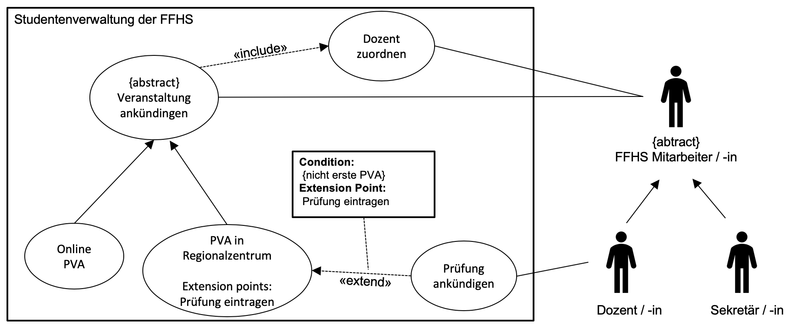
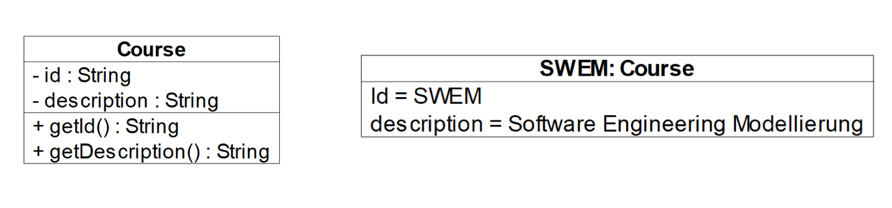
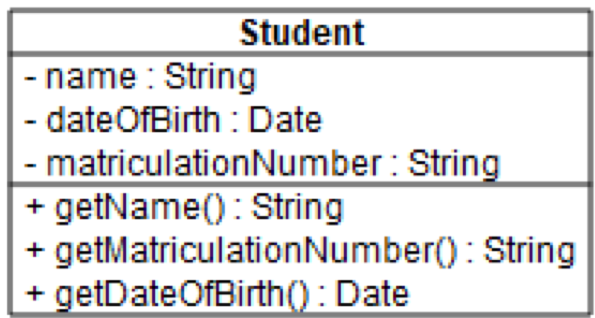
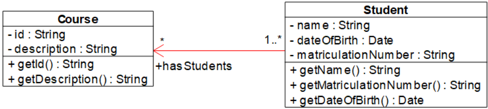
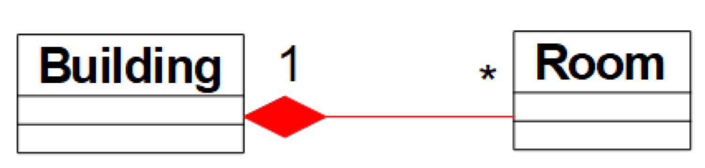
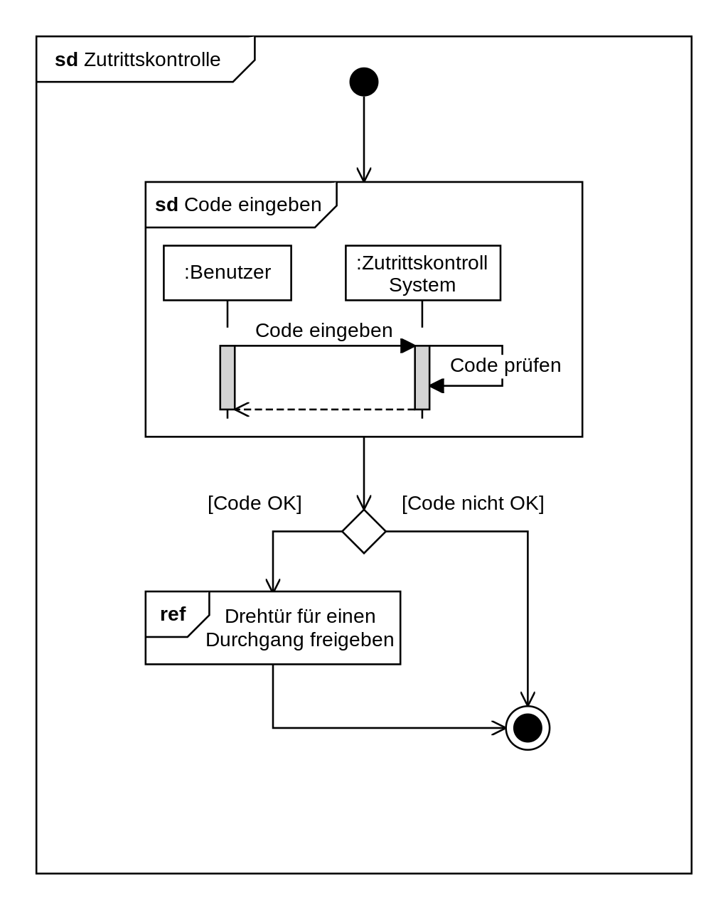
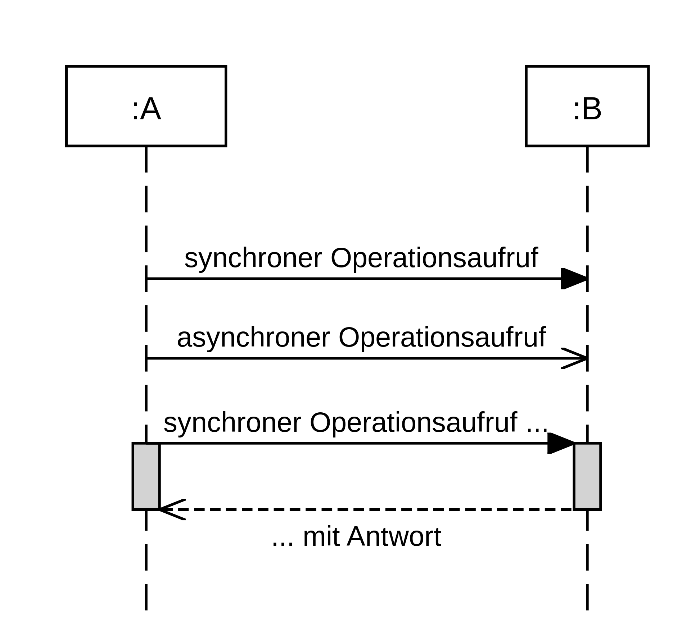

Danjo Henz, Oliver Bucher, Thierry Girod
UML
Anwendungsfalldiagramm
Klassendiagramm
Sequenzdiagramm
Sprintplanning
- Sprint 1
- Backlog
- Klassendiagramm
- Sequenzdiagramm
Anwendungsfalldiagramm
- Was wird beschrieben?
- Wer interagiert mit dem System?
- Was machen diese Akteure?
Anwendungsfall und Akteure

Beziehungen
(Generalisierung und Vererbung)

Anwendungsfalldiagramm erstellen
- Identifikation von Akteuren und Anwendungsfällen
(Wer- und Was-Fragen)
- Beziehungen und Zusammenhänge finden
- Beschreibung der Anwendungsfälle
- Name, Kurzbeschreibung
- Vorbedingungen, Nachbedingungen
- Fehlersituationen, Systemzustand im Fehlerfall
- Akteur
- Trigger
- Standardablauf
- Alternativablauf
- Stolpersteine vermeiden
Stolpersteine
- Modellierung von Abläufen
- Falsches Setzen der Systegrenze (Akteure immer ausserhalb)
- Vermischen von Abstraktionsleveln
- Funktionale Dekomposition (Anwendungsfälle sind immer eigenständig ausführbar, ansonsten keine
Anwendungsfälle)
- Fehlerhafte Assoziationen
- Modellierung von redundanten Anwendungsfällen
(Fälle mit gleichem Ziel zusammenfassen,
bsp. LV
verwalten,
statt LV erstellen, löschen, aktulisieren)
Wofür und Warum?
- Objektorientierte Programmierung
- Einfach und populär
- Konzeptionelle Sicht in frühen Projektphasen
- Codegenerierung
Vom Objektdiagramm
zum Klassendiagramm
Statische Struktur <–> Zustand zur Laufzeit

Notation
- Grundlagen
- Attribut
[Sichtbarkeit] [/] name [: Typ] [ Multiplizität ] [= Vorgabewert]
[{eigenschaftswert*}]
- Operation
[Sichtbarkeit] name [({Parameter})] [: Rückgabetyp] [{eigenschaftswert*}]
- Sichtbarkeit
- Datentyp
- Multiplizität

Assoziation
Modellierung möglicher Beziehungen
zwischen Instanzen

Aggregation und Komposition

Stolpersteine
- Zweck erkennen / festlegen
-
Fehlende Methoden, Parameter, Assoziationen
-
Fehlende Navigierbarkeit und Beschriftungen bei den Assoziationen
-
Fehlender oder falscher Typ der Methode
-
Angabe von Implementationsdetails
-
Methoden in falschen Klassen aufgelistet
Was noch?
- Generalisierung und Vererbung
-
Abstrakte Klassen
-
Interfaces
-
Assoziationsklassen
-
Codegenerierung
Sequenzdiagramm
- Zeitlicher Ablauf
- Interaktion zwischen Objekten / Akteuren
mittels
Nachrichten
Weitere Aspekte
-
Striktheit der Abfolgen
- weitere Fragmente
UML@Classroom: Seite 127
weitere interessante Elemente
Interaktionsdiagramm

weitere interessante Elemente
Asynchronität

Danjo Henz, Oliver Bucher, Thierry Girod
UML
Anwendungsfalldiagramm
Klassendiagramm
Sequenzdiagramm